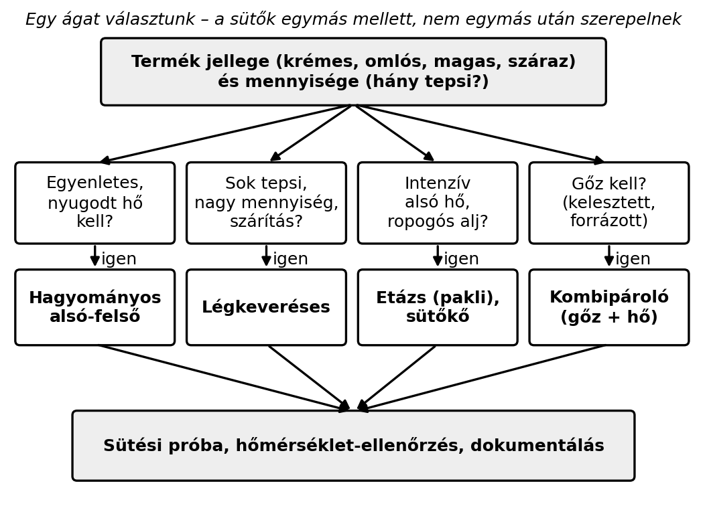

Egy cukrászüzemben ugyanaz a piskóta más eredménnyel sülhet, ha a sütő típusa, hőfoka, páratartalma vagy a hőátadás módja eltér. A tűzhelyen főzött krém, a fritőzben sütött fánk és a mikrohullámban melegített ganache mind más-más hőközlési elven működik. Ha a tanuló nem tudja, hogy a légkeveréses sütő miért szárít intenzívebben, miért nem szabad forró olajba jeges fánkot tenni, vagy miért fontos az olajcsere, akkor nem tudja megbízhatóan szabályozni a termék minőségét és a fogyasztó biztonságát. Ebben az alfejezetben a hőközlő berendezéseket úgy tanuljuk meg, hogy a műhelyben ki tudjuk választani a termékhez illő eszközt, és biztonságosan tudjuk kezelni.
Képzelj el egy cukrászműhelyt, ahol három sütő dolgozik egyszerre. Az egyik egy hagyományos, alsó-felső fűtésű sütő, benne linzerkosarak sülnek egyenletes, nyugodt hőben. A másik egy légkeveréses sütő, amelyben négy tepsinyi habcsók szárad, a forró levegő folyamatosan elszívja a nedvességet. A harmadik egy etázspakli, amelyben réteges vajas tészták sülnek kőre téve. A tűzhelyen cukorszirup forr, a konyha túlsó sarkában a fritőz 170 °C-os olaja várja a fánkokat. Mindegyik berendezés hőt ad át, de más módon és más célra.
Az alábbi diagram azt mutatja, hogyan válasszuk ki a sütőt a termék és a kívánt sütési hatás alapján.

Az ábra négy egymás melletti lehetőséget mutat, nem egymás utáni lépéseket: először a termék sajátosságait, a mennyiséget és a kívánt szerkezetet vizsgáljuk, majd a kívánt sütési hatás szerint egy ágat választunk, és a választott sütőben sütési próbát végzünk. Sok termék több sütőben is süthető; ilyenkor a beállításokkal és a tepsik számával kompenzálunk.
Definíció. A hőközlő berendezés olyan üzemi eszköz, amely a benne lévő nyersanyagnak vagy félkész terméknek hőenergiát ad át, és ezzel süti, főzi, melegíti, szárítja vagy olajban kisüti azt.
Szabály. A hőközlés módja alapvetően meghatározza a termék felületét, belső szerkezetét, sütési idejét és a berendezés energiaigényét. A cukrászüzemben leggyakrabban három hőátadási mód működik egyszerre vagy egymás mellett:
Szabály. A gáz- és villamos berendezéseket csak akkor szabad üzemeltetni, ha a helyiség szellőzése, az égéstermék-elvezetés és az elektromos hálózat a gyártó és a helyi előírások szerint megfelelő. A tanuló gépet csak oktatás után, felügyelet mellett kezelhet.
Higiénia. Minden használat előtt ellenőrizni kell a berendezés tisztaságát, a morzsatálca, a fűtőfelület és a tömítések állapotát. Az ételmaradék, a ráégett cukor és a használt olaj nemcsak minőségi hibát, hanem égési, tűz- és mikrobiológiai kockázatot is jelent.
A hőátadás módjait a termék sütése közben is megfigyelhetjük. A linzerkarika alja a tepsin közvetlen hővezetéssel pirul, a felülete pedig a sütőtér forró levegőjének hőáramlásával és a fűtőszálak hősugárzásával sül. A fánk a forró olajban úszik, ezért a hőátadás elsősorban hőáramlás és hővezetés, a felülete az olajjal érintkezve gyorsan kérget kap. A piskóta a formában hővezetéssel, a felületén hőáramlással és sugárzással sül.
Összefüggés. A sütési idő nemcsak a sütő hőmérsékletétől, hanem a hőátadás sebességétől is függ. A gyorsabban keringő levegő vagy a jobban hővezető edény rövidebb sütési időt eredményezhet, ami miatt a sütő hőfokát vagy a tepsik számát módosítani kell. Ezt a sütés alapműveleténél a A sütés: hőátadás, változások a tésztában, sütési veszteség és sütés utáni műveletek alfejezetben használjuk fel.
Az alábbi táblázat a leggyakoribb hőközlő berendezéseket foglalja össze a cukrászüzemben.
| Berendezés | Fő hőátadás | Jellemző műhelyhasználat | Kiemelt veszély |
|---|---|---|---|
| Gáztűzhely, gázsütő | vezetés, sugárzás, égéstermékből hőáramlás | krémfőzés, szirupfőzés, sütés | gázszivárgás, égéstermék, nyílt láng |
| Indukciós főzőlap | vezetés (mágneses indukció) | szabályozott melegítés, kényes krémek, csokoládé | forró edény, kompatibilis edény szükséges |
| Villanytűzhely, öntöttvas lap | vezetés, sugárzás | főzés, lassú melegítés | forró lap, utóhő |
| Hagyományos alsó-felső sütő | sugaras + természetes áramlás | piskóták, omlós tészták, kényes sütemények | forró sütőtér, tepsihúzás |
| Légkeveréses sütő | kényszerített hőáramlás + sugárzás | több tepsi, apró teasütemény, száraz habcsók | forró levegő, szárítás, egyenetlen pakolás esetén |
| Etázspakli / kő sütő | vezetés + erős alsó hő | leveles tészta, ropogós aljú termék | extrém forró kő, égés |
| Kombipároló | gőz, hőáramlás, vezetés | gőzölés, regenerálás, nedves sütés | gőz, forrázás |
| Mikrohullámú melegítő | mikrohullámú sugárzás, vezetés | kiolvasztó, melegítés, csokoládé olvasztása alacsony teljesítményen | egyenetlen melegedés, fém tilos |
| Csokoládémelegítő | vezetés, enyhe légáram | csokoládé temperáláshoz melegítés, tejszín melegítés | nem jellemző, de forró edény |
| Olajsütő (fritőz) | hőáramlás, vezetés | fánk, egyes sós termékek | forró olaj, tűz, égés |
Jogszabály. A gázüzemű berendezések telepítése és üzemeltetése a gáz biztonsági, tűzvédelmi és építésügyi előírások hatálya alá tartozik; a villamos berendezésekre a villamos biztonsági előírások vonatkoznak. Az élelmiszerrel érintkező felületeknek élelmiszeripari tisztíthatóságú anyagból kell készülniük (ellenőrizendő: 1935/2004/EK és hatályos gépbiztonsági előírások). A pontos telepítési és üzemeltetési feltételeket a gyártói kezelési utasítás, a helyi gáz- és villamos tervező, valamint a hatósági ellenőrzések határozzák meg.
A tűzhely a cukrászüzemben főleg kiegészítő hőforrás: cukorfőzéshez, krémek melegítéséhez, töltelékek készítéséhez, szirupok húzásához és kisebb mennyiségben sütéshez is használható. A tűzhely lehet gáz- vagy villanyüzemű, továbbá a modern üzemekben indukciós főzőlap.
Figyelem. A tűzhely fölött ne tároljunk gyúlékony anyagot, papírtörlőt, alkoholt vagy konyharuhát. A főzőedényt úgy helyezzük el, hogy a nyele ne álljon ki a munkatérbe. A gőz és a forró fedő felnyitásakor óvjuk a kezünket hosszú ujjú védőeszközzel.
A cukrászüzemben a sütő a legfontosabb hőközlő gép. A típusok közti választást a termék fajtája, a tételnagyság, a rendelkezésre álló energia és a kívánt sütési jelleg határozza meg.
A metszeteken a hőátadás módját a nyilak alakja mutatja: a hullámos nyíl sugárzás (az alsó és felső fűtőszáltól), az ívelt nyíl áramlás (a hagyományos sütőben természetes, a légkeveréses sütőben a ventilátor és a körfűtőelem kényszerített áramlása több tepsi között), a rövid egyenes nyíl vezetés (a paklisütő fűtött sütőkövéről a tepsi aljába). A légkeverés ezért szárít jobban, a paklisütő pedig ezért adja a ropogós aljat.
Figyelem. A sütőajtót nyitáskor lassan, a gőzt elengedve kell nyitni, az arc és a kéz távolításával. A tepsiket hosszú, száraz konyharuhával vagy hőálló védőkesztyűvel húzzuk ki. A forró tepsit mindig hőálló felületre, nem műanyag dobozra vagy hideg, vizes felületre helyezzük.
A mikrohullámú melegítő a mikrohullámú sugárzást használja a vízmolekulák gerjesztésére, ezért elsősorban vizes, nedves anyagok melegítésére alkalmas. A cukrászüzemben leginkább kis mennyiségű krém, zselatinoldat, csokoládé vagy fagyasztott betét kiolvasztására, melegítésére használható. A mikrohullámú melegítés egyenetlen lehet, ezért a melegítést rövid szakaszokban, kevergetés mellett kell végezni.
Tilos. Mikrohullámú sütőbe fémeszközt, alufóliát, fémkanalat, fémes díszű edényt nem szabad tenni. A csokoládét is csak alacsony teljesítményen, rövid szakaszokban melegítsük, mert könnyen megég, és a temperáláshoz szükséges kristályszerkezet tönkremegy.
Jogszabály. A mikrohullámú készülékekre a kisfeszültségű és elektromágneses biztonsági előírások, valamint az élelmiszerrel érintkező anyagok szabályai vonatkoznak (ellenőrizendő: hatályos gépbiztonsági és élelmiszer-biztonsági előírások).
A csokoládémelegítő (temperálókészülék vagy melegítő tál) kifejezetten alacsony hőfokú, finom melegítésre szolgál. A csokoládét 40–50 °C fölé nem szabad melegíteni, mert a kakaóvaj kristályszerkezete károsodik, a massza fénytelen, szürkés, darabos lesz (ellenőrizendő: gyártói hőmérsékleti ajánlás). A melegítő folyamatos keveréssel és pontos hőmérséklet-tartással előzi meg ezt. A csokoládémelegítő nem sütő, hanem temperálást előkészítő vagy kényes betétek melegen tartására szolgáló berendezés.
Az olajsütő a fánk, illetve egyes sós pékáruk gyors kisütésére szolgál. A forró olaj hőmérséklete általában 160–180 °C között van (ellenőrizendő: gyártói és élelmiszerbiztonsági útmutató). A fánkot sütés közben forró olajba helyezzük, ahol a hő hatására a tészta felületén kéreg képződik, a belseje gőzzel jár, és a termék úszik az olajon.
Figyelem. A forró olaj az egyik legsúlyosabb égési és tűzveszély a cukrászüzemben. Az olajsütőt csak úgy szabad üzemeltetni, hogy a környékén ne legyen víz, jég vagy nedves tészta, mert a hirtelen gőzképződés kifröccsenést okoz. A tésztát tőle távol, óvatosan kell az olajba engedni. A használt olajjal érintkezve mindig hosszú ujjú védőkesztyűt kell viselni.
Tilos az égő olajat vízzel oltani! A víz robbanásszerűen elgőzölög, és lángcsóvát lövell. Olajtűz esetén: kapcsold ki a fűtést (gázt zárd el), fedd le a fritőzt fedővel vagy tűzoltó takaróval, és ne mozdítsd az edényt; nagyobb tűznél F osztályú (zsír- és olajtűzre minősített) tűzoltó készüléket használj, majd riaszd a tűzoltóságot (112). Az olajat ne töltsd a gyártói maximumjelzés fölé, és ne hevítsd a füstpontja közelébe (ellenőrizendő: üzemi tűzvédelmi szabályzat, OTSZ).
A metszeten az olajtartály (1), a fűtőelem (2) és alatta a hidegzóna (3) látható, ahová a morzsa leülepszik, így nem ég oda. Az olajszint a MIN és a MAX jel (4) között legyen. A termosztát (5) a munkahőfokot állítja, a biztonsági hőkorlátozó (6) túlhevüléskor lekapcsolja a fűtést. Sütés után a kosarat (7) a peremre akasztva csepegtetjük; az olajat a leeresztőcsapon (8) csak leállítás és áramtalanítás után eresztjük le. Olajtűznél a fedél (9) zárja el az oxigént. Az alsó sor: helyes olajszint és száraz termék; hibás a túltöltés és a vizes termék.
Jogszabály. A sütőolaj nem használható korlátlanul. A lejárt, avas, habzó, dohossá vált vagy szennyezett olajat selejtezni kell. Az olajcsere ütemezése a termelési mennyiségtől, az olaj eredeti összetételétől, a hőmérséklettől és a szennyeződéstől függ (ellenőrizendő: gyártói adatlap és hatályos élelmiszerbiztonsági útmutató). A kiégett olaj kémiai degradációja miatt kockázatot jelent, ezért ételben nem maradhat.
Tilos. Lejárt alapanyagot „megmenteni”, használt olajat korlátlanul újrahasznosítani. A fritőzből az olajat csak leállítás után, áramtalanítva és megfelelő gyűjtőedénybe eresztve szabad leengedni.
Minden hőközlő berendezés üzemeltetése során a következő általános biztonsági rendet kell követni.
A sütő energiaigénye és a sütési kapacitás a mindennapi munkában is számít. Két példán keresztül gyakoroljuk a hőközlő berendezésekhez kapcsolódó számításokat.
Egy cukrászüzemben a légkeveréses sütő névleges teljesítménye . A sütő egy nap átlagosan -ig üzemel. Mennyi a napi energiafelhasználás kilowattórában, ha a sütő valós átlagos terhelése a névleges teljesítmény 70 %-a?
Megoldás
Adott:
Keresett: napi energia (kWh).
Képlet:
ahol az átlagos teljesítmény:
Így az energia:
A sütő napi energiafelhasználása körülbelül , ha a terhelés 70 %-os. (Az adat tanulási példa, az aktuális villamosenergia-árat a szolgáltató számlája szerint kell figyelembe venni.)
Egy fánk sütéséhez az olaj hőmérsékletét -ra kell beállítani. A sütő fűtőszálai túlmelegítik az olajat, ezért a termosztát -ra kapcsol ki, majd -ra kapcsol be. Mennyi a hőmérséklet-ingadozás, és mi a teendő, ha a cél a közelében tartás?
Megoldás
Adott:
Keresett: a hőmérséklet-ingadozás (°C).
Képlet:
Az ingadozás 10 °C, ami a fánk esetében elfogadható lehet, de ha a minőségi követelmény szigorúbb, akkor a termosztátot finomabb kapcsolásra kell állítani, vagy az olaj mennyiségét növelni, hogy nagyobb legyen a hőtehetetlenség. A sütő hőmérsékletét folyamatosan mérni kell, és a hőmérséklet-tűrést a termékre vonatkozó belső előírás szerint dokumentálni.
Cél: A hőközlő berendezések biztonságos, higiénikus használatának gyakorlása a cukrászüzemben.
Eszközök és anyagok: gáz- vagy villanytűzhely, sütő, légkeveréses sütő, mikrohullámú melegítő, olajsütő, hőmérő, tepsik, hőálló kesztyű, tisztítószerek, konyharuha.
Higiéniai munkakezdés: tiszta munkaruha, hajháló, kézmosás, fertőtlenítés. A sütő és a tepsik tiszták, a morzsatálca üres, a sütőajtó tömítése ép, a hőmérő kalibrálva van.
Biztonsági korlát. A gépi művelet tanműhelyi vagy üzemi környezetben, oktatás után és felügyelet mellett végezhető; otthon háztartási géppel, kis adagban gyakorolj.
Technológiai lap.
A kritikus pontok:
Allergének. A sütőberendezésnél keresztszennyeződést okozhat a közös tepsi, a sütőtérben lerakódott morzsa vagy a fritőz olajának korábbi felhasználása. Az allergénmentes termék sütése előtt a tepsiket és a berendezést a belső allergénkezelési eljárás szerint át kell vizsgálni, tisztítani, és ha szükséges, külön olajat kell használni (pl. gluténmentes fánk külön olajban).
Minőségellenőrzés. A termék felületi színe egyenletes, a metszet belső szerkezete megfelelő, a tészta nem nyers, nem égett, az illata a termékre jellemző, nem füstös, nem avas. A tömeg a recept szerinti sütési veszteség után ellenőrizhető.
Egy cukrászüzemben húsvét előtt nagy mennyiségű leveles tészta sült. A sütőt légkeverésesbe kapcsolták, és a tepsiket egymás fölé helyezték. A tészták alja jó ropogós lett, de a teteje hamar megbarnult, mielőtt a közepe átsült. Az üzemvezető megvizsgálta a sütő beállítását, és azt találta, hogy a légkeverés túl erős, a tepsik túl közel voltak egymáshoz, és a sütő hőmérséklete is magas volt. A következő tételnél alacsonyabb hőfokot választott, a légkeverést csökkentette, és a tepsiket jobban szellőző távolságra helyezte. A leveles tészta így egyenletesen felrétegződött, a vaj nem olvadt ki idő előtt, és a termék a minőségi követelményeknek megfelelt. A tanulság: a sütő típusa és beállítása éppúgy hozzá tartozik a recepthez, mint a nyersanyagok aránya.
Önellenőrzés – válaszok
1. feladat (A) Sorolj fel három hőátadási módot, és adj mindegyikre egy cukrászati példát!
2. feladat (A) Miben különbözik a hagyományos alsó-felső sütő és a légkeveréses sütő hőátadása? Melyik termékeknél érdemesebb az alsó-felső fűtést választani?
3. feladat (B) Egy cukrászüzemben a légkeveréses sütőt 4 hétig használják minden nap átlagosan 6 órán keresztül. A sütő átlagos teljesítményfelvétele 5,5 kW. Hány kWh az ilyen üzemeltetés összes energiafelhasználása?
4. feladat (B) Egy fritőzben az olaj hőmérsékletét 175 °C-ra állítják. A termosztát 180 °C-nál kapcsol ki, és 170 °C-nál kapcsol be. Mekkora a hőmérséklet-ingadozás, és miért fontos ezt ismerni?
5. feladat (C) Hibaelemzés: egy üzemben a sajttorta teteje reped, az alja viszont nyersnek tűnik. Milyen sütőbeállítási hibára gyanakodhatsz, és milyen mérésekkel ellenőriznéd a sütőt?
6. feladat (D) Gyakorlati feladat: tanműhelyben, oktató felügyeletével süss ugyanabban a sütőben két tepsi piskótát, az egyiket alsó-felső fűtéssel, a másikat légkeveréssel. Mérjed a sütő belső hőmérsékletét, az időt, és hasonlítsd össze a két piskóta tömegét, magasságát, felületi színét és belső szerkezetét. Készíts rövid értékelő lapot.
Megoldások
1. feladat. Hővezetés: a forró sütőlemezről a linzer aljába. Hőáramlás: a légkeveréses sütő forró levegője a habcsókot melegíti. Hősugárzás: a sütő fűtőszálai a piskóta felületét szárítják, színezik.
2. feladat. A hagyományos sütőben a hőátadás főleg sugárzás és természetes légáramlás, a sütőtér hőmérséklete egyenetlenebb, ezért kényes, folyékony tésztájú, magas piskótánál kedvezőbb. A légkeveréses sütő kényszerített hőáramlással, több tepsi közt egyenletesebben süt, de szárít, ezért omlós, könnyen száradó terméknél nem mindig ideális.
3. feladat. Adott: , . Keresett: (kWh). Képlet: . Behelyettesítés: . Az összes energiafelhasználás 924 kWh (heti 5 munkanappal számolva , azaz 660 kWh).
4. feladat. A hőmérséklet-ingadozás . Azért fontos, mert ha az olaj hőmérséklete túl alacsony, a fánk túl sok olajat szív fel, ha túl magas, megég a felület.
5. feladat. Gyanakodhatunk arra, hogy a sütő alsó hője nem elég erős, a felső viszont túl magas, vagy a sütő légkeverése nem egyenletes. Ellenőrizzük a sütő belső hőmérsékletét alsó és felső szinten, a termosztát pontosságát, és mérjük a sajttorta maghőmérsékletét a sütési idő előtt. Ha az alsó fűtőszál hibás, szervizelés szükséges.
6. feladat. A gyakorlati feladat értékelésekor a két piskóta közötti különbséget kell megfigyelni. A légkeveréses piskóta általában alacsonyabb, szárazabb, egyenletesebb felületű, míg az alsó-felső fűtéssel sült piskóta magasabb, párásabb. A tömegmérésből a sütési veszteség számolható. A tanulónak dokumentálnia kell a sütő hőmérsékletét és a minőségi észrevételeket.
A hőközlő berendezések a cukrászüzem alapvető gépei. A hőátadás három fő módja a hővezetés, a hőáramlás és a hősugárzás, amelyek a különböző sütőkben és tűzhelyeken eltérő arányban érvényesülnek. A hagyományos alsó-felső sütő nyugodt, egyenletesebb hőt ad, a légkeveréses sütő több tepsi sütésére alkalmas, de szárít, ezért a hőfokot és az időt a gyártói és a szakmai előírások szerint módosítani kell (ellenőrizendő). Az etázs/pakli sütő intenzív alsó hőt ad, különösen leveles tésztához jó. A kombipároló gőzzel segíti a tésztafújást, a mikrohullámú melegítő csak rövid, alacsony teljesítményű melegítésre használható, fém nélkül. A fritőz forró olaja súlyos égés- és tűzveszély; az olaj hőfokát mérni kell, az elhasználódott olajat cserélni (ellenőrizendő). A gázszivárgást és a forró felületeket mindig biztonsági eljárással kezeljük. Továbbvitt eredmény. A hőátadási módok és a sütőtípusok jellemzői közvetlenül szükségesek a sütés alapműveletéhez A sütés: hőátadás, változások a tésztában, sütési veszteség és sütés utáni műveletek, valamint a hőelvonó berendezések ellentétes irányú technológiájához Hőelvonó berendezések: hűtők, mélyhűtők, sokkoló, fagylaltgép.
Felhasznált forrástípusok: cukrászati technológiai szakkönyvek, élelmiszeripari gépészeti és munkavédelmi alapok, a hőátadás fizikai alapjai, hatályos gépbiztonsági és élelmiszer-biztonsági előírások (általánosan). A szövegben számos helyen jelöltük, hogy a konkrét hőmérsékletet, időt és olajcsere-gyakoriságot a gyártói adatlap és a hatályos élelmiszerbiztonsági útmutató szerint kell pontosítani: sütő hőfokok, olajsütő hőfoka, csokoládémelegítési hőmérséklet, kombinált sütő gőz beállításai. A jogszabályi utalások között az élelmiszerrel érintkező anyagokra és a gépbiztonságra vonatkozó uniós és magyar előírások tartoznak, de konkrét cikkszámot vagy határértéket nem ellenőriztünk. Ezt a kiadás előtt a hatályos jogszabályokban és a NÉBIH, valamint a gyártói kézikönyvek szerint frissíteni kell.